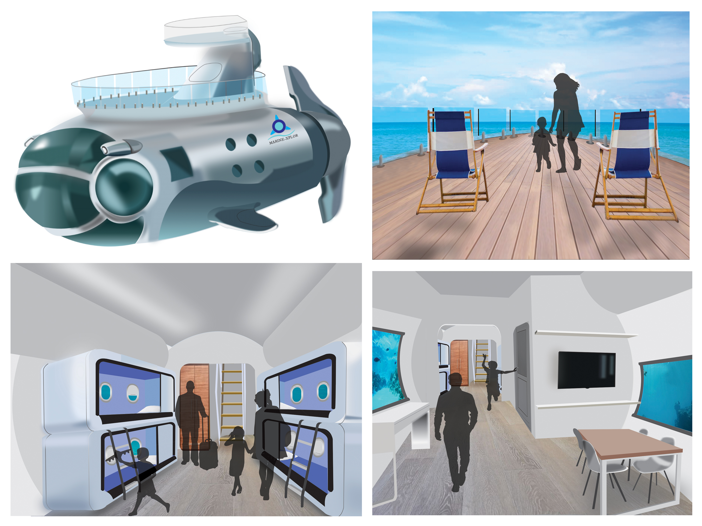

<html>
<body>
<head>
  <meta charset="utf-8"/>
  <link rel="stylesheet" href="https://maxcdn.bootstrapcdn.com/bootstrap/3.3.6/css/bootstrap.min.css">
  <link rel="stylesheet" type="text/css" href="Sub.css">
</head>
</html>

<body>
  <ul id="menu">
    <ul>
      <li><a href="index.html">About Me</a></li>
        <li><a href="Port.html">Portfolio</a></li>
          <li><a href="#">Resume</a></li>
            <li><a href="#">Contact Me</a></li>
          </ul>
        </ul>
      </body>

<div class="jumbotron">
  <h1>Marine-Xplor</h1>
  </div>


<div class="container">
  
  </div>

  <h2>Submarine Design</h2>
  <p>Designing the interior and exterior of this travel submarine has really furthered my design skills in Illustrator and Photoshop. This semi-submarine features a cool living space, open deck and a control room with panoramic views. A presentaton booklet was put together to showcase the creative/asthetic contect of the design as well as the research and development behind it. </p>
<p1> Adobe Photoshop, Illustrator and Indesign </p1>

<iframe src="imgs/Subooklet.pdf" width="43%" height="860px">
  </iframe>


                    <h3><a href="Cyber.html" style="text-decoration:none">Brochure</a></h3>

                  <div class="unnamed">
                    <a href="Taco.html"</a>
                    
                    </div>

                  <h4><a href="UB.html" style="text-decoration:none">Urban Development</a></h4>

                  <div class="unnameds">
                    <a href="Taco.html"</a>
                    
                    </div>

                  </body>
